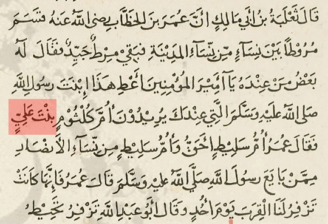

Published by SunniDefense © on June 10th, 2009
The marriage of Umm Kulthūm, the daughter of `Alī ibn Abī Ţālib (ra), with `Umar ibn al-Khaţţāb (ra) is a disputed incident between Shī`īs and Sunnīs. The Sunnīs, who believe in the occurrence of this marriage, cite evidences from both Sunnī and Shī`ī texts, whereas the Shī`īs do the same to either bring forth an explanation or deny it.
Answering-Ansar has also published an entire booklet about this marriage, which attempts to discard all evidences in support of its occurrence. This booklet has gained popularity among Shī`īreaders, despite of the vulgarity found in it, as the ultimate reply to the Sunnīs; to the extent that even the “moderate” Ahlul Bayt Digital Islamic Library Project (DILP) [www.al-islam.org] has promoted it by including it in its library.
The reliability of that booklet and Answering-Ansar as a whole, will be known from the following example that will also show the readers—especially “truth seekers”—how Ithnā’ `Asharī Shī`īs of today lie and tamper with major Sunnī texts in order to support their arguments.
The Narration of Şaĥīĥ al-Bukhārī
One of the evidences that support the Sunnī claim is a narration found in Şaĥīĥ al-Bukhārī. The Answering-Ansar team writes about that narration in the following words:
Quoting Answering-Ansar:
Pathetic efforts of the Ahl’ul Sunnah to ‘prove’ that Umme Kalthum binte ‘Ali was the wife of Umar from the Sahah Sittah
In their efforts to prove the Shi’a wrong our critics have use all manner of coined tradition to prove this marriage. Whilst the Saha Sittah fails to make any mention of this Nikah, the followers of Mu’awiya begin to clutch at straws ‘suggesting’ that Umme Kalthum binte Fatima (as) was the wife of Umar.
The tradition from Sahih al Bukhari
A common favourite is this tradition from Sahih al Bukhari “Fighting for the Cause of Allah (Jihad)” Volume 4, Book 52, Number 132:
Narrated Tha’laba bin Abi Malik:
‘Umar bin Al-Khattab distributed some garments amongst the women of Medina. One good garment remained, and one of those present with him said, “O chief of the believers! Give this garment to your wife, the (grand) daughter of Allah’s Apostle.” They meant Um Kalthum, the daughter of ‘Ali. ‘Umar said, Um Salit has more right (to have it).” Um Salit was amongst those Ansari women who had given the pledge of allegiance to Allah’s Apostle.’ ‘Umar said, “She (i.e. Um Salit) used to carry the water skins for us on the day of Uhud.”
Nikah of Lady Umme Kulthum[as], page 39
In order to refute this narration, the Answering-Ansar team then makes the following comment:
Quoting Answering-Ansar:
This is the only time that we read anything of Umme Kalthum in the entire contents of al Bukhari; it does not even appear in the book of Nikah, but in the Book of Jihad. Dr Muhsin Khan in his translation has in fact used dishonesty after Um Kalthum he adds the words “the daughter of ‘Ali” when this is not present in the Arabic. The actual word that is used in the text that Khan interpreted as wife is “Undhuk” whilst we acknowledge Undhuk can indeed refer to one’s wife, its literal meaning in Arabic grammar is “Close”, “Next To” and “Near”. In the Qur’an the word Undhuk is used in exactly this context. If we really wish to understand this tradition at most all that we can ascertain is that people had asked that the garment be given to Umm Kalthum who was close to Umar. The words close and near make much more sense than wife, if “Undh” automatically means wife then perhaps Khan could literally translate the same narration “Fa Kal la Baz min Undh” meaning and one of those present with him (meaning wives) said. This would in effect mean that every woman in Madina was the wife of Umar.
If we take the word Undh as wife then it means that Umar distributed the garments amongst all those present with him, present meaning wives! All because they were next to him does not mean that Undh meant that they were all his wives. When Undh does not mean wives then why has the same word been used to single out Umme Kalthum as wife? When Undh was ‘common place” to mean “next to” why would the narrator not have sought to make a distinction and refer to Umme Kalthum as ‘Zawaaj’? This would have no doubt clarified any confusion and distinguished this woman from the group that was with Umar. If we analyse the Qur’an we see that Undhuk is used at many points referring to close / near at no points does Allah (swt) refer to Undhuk as Wife, nor can we find this to be used as wife in any Tafsir either.
Nikah of Lady Umme Kulthum[as], page 39
In light of the above, the Answering-Ansar team claims that:
- The words “the daughter of `Alī” [bint `alī] are not found in the original [Arabic] text ofŞaĥīĥ al-Bukhārī.
- Dr. Muhsin Khan, the translator of Şaĥīĥ al-Bukhārī, has dishonestly added “the daughter of ‘Alī” in his translation.
- The “actual word that is used in the text” is “Undhuk.”
Let us examine these claims and see how true they are:
One – Şaĥīĥ al-Bukhārī and “bint `Alī”
The Answering-Ansar team has audaciously claimed that the original text of this narration of Şaĥīĥ al-Bukhārī does not contain the words “the daughter of `Alī” [bint `alī].
This, unfortunately, is a blatant lie.
The original text of Şaĥīĥ al-Bukhārī is as follows:
قال ثعلبة بن أبي مالك إن عمر بن الخطاب رضي الله عنه قسم مروطا بين نساء من نساء المدينة فبقي مرط جيد فقال له بعض من عنده يا أمير المؤمنين أعط هذا ابنة رسول الله صلى الله عليه وسلم التي عندك يريدون أم كلثوم بنت علي فقال عمر أم سليط أحق وأم سليط من نساء الأنصار ممن بايع رسول الله صلى الله عليه وسلم قال عمر فإنها كانت تزفر لنا القرب يوم أحد
qāla tha`laba ibn abī mālik inna `umar ibn al-khaţţāb rađiya Allāhu `anhu qasama murūţan bayn nisā’i min nisā’ al-madīna fa baqiya mirţun jayyidun fa qāla lahu ba`đu man `indahu yā amīr al-mu’minīn a`ţi hādha ibnat rasūl Allāh şall Allāhu `alayhi wa sallama allatī `indaka yurīdūna umm kulthūm bint `alī fa qāla `umar umm salīţ aĥaqqu wa umm salīţ min nisā’ al-anşār mimman bāya`a rasūl Allāh şall Allāhu `alayhi wa sallama qāla `umar fa innahā kānat tazfiru lanā al-qirab yawm uĥud
“Tha`laba ibn Abī Mālik said: ‘`Umar (ra) divided up some garments among some of the women of Madīna. One excellent garment remained and one of those with him said: ‘Commander of the believers! Give this to the (grand) daughter of the Messenger of Allāh (saws) to whom you are married—meaning Umm Kulthūm the daughter of `Alī. `Umar (ra) replied: ‘Umm Salīţ is more entitled. Umm Salīţ was one of the people of Anşār who had given allegiance to the Messenger of Allāh (saws).’ `Umar (ra) added: ‘She carried waterskins for us on the day of Uĥud.’”
- Şaĥīĥ al-Bukhārī, of Abū `Abd Allāh al-Bukhārī (d. 256), volume 3, page 222 [Beirut]
As it is clear from the original Arabic text and transliteration above, the original text of Şaĥīĥ al-Bukhārī does contain the words “the daughter of `Alī” [bint `alī]. These words are found in every single edition of Şaĥīĥ al-Bukhārī and all of its commentaries ever printed to date.
For verification, one could refer to the following prints of Şaĥīĥ al-Bukhārī:
![The 1266/1849 Indian edition printed with the footnotes of al-Sindī (d. 1138) [Delhi]](../../../../../web.archive.org/web/20110816094757/http_/www.sunnidefense.com/exp/sites/default/files/sahih_bukhari_delhi_2_103.gif){kind=link}
![The 1312/1894 edition printed by al-Matba`at al-Kubra al-Amiriyya of Bulaq [Cairo]](../../../../../web.archive.org/web/20110816094618/http_/www.sunnidefense.com/exp/sites/default/files/sahih_bukhari_bulaq_4_33-34.gif){kind=link}
![The 1401/1981 edition printed with the commentary of al-Kirmānī (d. 786) by Dar Ihya Turath al-Arabi [Beirut]](../../../../../web.archive.org/web/20110816094812/http_/www.sunnidefense.com/exp/sites/default/files/sahih_bukhari_srhkirm_12_153.gif){kind=link}
All of these prints of Şaĥīĥ al-Bukhārī unquestionably show that the text of the narration has the words “the daughter of `Alī” [bint `alī]. This fact is not just realized by contemporary scholars, but early Sunnī scholars have also been mentioning these words in their commentaries throughout centuries.
Shihāb al-Dīn al-Qasţallānī (d. 923), for example, has commented on this narration of Şaĥīĥ al-Bukhārī centuries ago in the following manner:
(هذا ابنة رسول الله صلى الله عليه وسلم التي عندك يريدون) زوجته (أم كلثوم) بضم الكاف والمثلثة (بنت علي) وكانت أصغر بنات فاطمة الزهراء
“‘The (grand) daughter of the Messenger of Allāh (saws) to whom you are married’: his wife.
‘Umm Kulthum’: with a vowel u consonant of (letter) kāf and triplicity.
‘The daughter of `Alī’ [bint `alī]: and she was the youngest of the daughters of Fāţima al-Zahrā’.”
![Irshād al-Sārī li Sharĥ Şaĥīĥ al-Bukhārī, of Shihāb al-Dīn al-Qasţallānī (d. 923), volume 5, page 84 [Cairo]](../../../../../web.archive.org/web/20110816094908/http_/www.sunnidefense.com/exp/sites/default/files/irshad_sari_5_84.gif){kind=link}
These citations sufficiently prove that those words are found in Şaĥīĥ al-Bukhārī. However, in case the Answering-Ansar team and their devotees hit the inept lane again and claim that all prints have been “tampered by Nasibi Mullahs,” a last reference should be cited to conclude that the original text of Şaĥīĥ al-Bukhārī does include the words “the daughter of `Alī” [bint `alī].
The following is an image from a handwritten manuscript of Şaĥīĥ al-Bukhārī by Điyā’ al-Dīn al-Maqdisī that can be found at the library of al-Azhar [§301201]:

This clearly leaves no more room for doubt and establishes the fact that the Answering-Ansar team has indeed lied by claiming that the words “the daughter of `Alī” [bint `alī] are not found in the original [Arabic] text of Şaĥīĥ al-Bukhārī. All unbiased readers should compare the exposition above with the following statement on Answering-Ansar:
Quoting Answering-Ansar:
Dr Muhsin Khan in his translation has in fact used dishonesty after Um Kalthum he adds the words “the daughter of ‘Ali” when this is not present in the Arabic.
Nikah of Lady Umme Kulthum[as], page 39
What can this be called but blatant lying?
Two – Dr. Muhsin Khan and Mistranslation of the Narration
This is an old habit of the Answering-Ansar team. They themselves distort and mistranslate, while they make others bait by falsely accusing translators of dishonesty. It has been shown that the original [Arabic] text of Şaĥīĥ al-Bukhārī does contain the words “the daughter of `Alī” [bint `alī]. So the truth is that Dr. Muhsin Khan did not add those words in his translation and the Answering-Ansar team are the actual dishonest ones here.
Three – The “actual word that is used in the text” is “Undhuk”
They write:
Quoting Answering-Ansar:
The actual word that is used in the text that Khan interpreted as wife is “Undhuk” whilst we acknowledge Undhuk can indeed refer to one’s wife, its literal meaning in Arabic grammar is “Close”, “Next To” and “Near”. In the Qur’an the word Undhuk is used in exactly this context. If we really wish to understand this tradition at most all that we can ascertain is that people had asked that the garment be given to Umm Kalthum who was close to Umar. The words close and near make much more sense than wife, if “Undh” automatically means wife then perhaps Khan could literally translate the same narration “Fa Kal la Baz min Undh” meaning and one of those present with him (meaning wives) said. This would in effect mean that every woman in Madina was the wife of Umar.
If we take the word Undh as wife then it means that Umar distributed the garments amongst all those present with him, present meaning wives! All because they were next to him does not mean that Undh meant that they were all his wives. When Undh does not mean wives then why has the same word been used to single out Umme Kalthum as wife? When Undh was ‘common place” to mean “next to” why would the narrator not have sought to make a distinction and refer to Umme Kalthum as ‘Zawaaj’? This would have no doubt clarified any confusion and distinguished this woman from the group that was with Umar. If we analyse the Qur’an we see that Undhuk is used at many points referring to close / near at no points does Allah (swt) refer to Undhuk as Wife, nor can we find this to be used as wife in any Tafsir either.
Nikah of Lady Umme Kulthum[as], page 39
These words demonstrate the Answering-Ansar team’s utter ignorance of the Arabic language rather than the fallacy of the Sunnī argument. To mention them in points:
- The “actual word” mentioned by the Answering-Ansar team as “Undhuk” is in reality “`indaka,” a compound word resulting from the attachment of “`ind” with the directive masculine personal pronoun “ka” [your]. `Ind is a preposition that refers to time, place or possession, and when directed towards a male with a woman of no blood relation mentioned in a possessive manner, it refers to a wife. Such usage of words is common in the Arabic language and examples of it are also found in both Sunnī and Shī`ī texts.
Such as the narration found in Shī`ī texts that relates from Abū Başīr (d. 150):
حدثني أبو جعفر عليه السلام أن أباه كانت عنده امرأة من الخوارج أظنه قال من بني حنيفة فقال له مولى له يا ابن رسول الله إن عندك امرأة تبرأ من جدك فقضى لأبي أنه طلقها فادعت عليه صداقها
“Abū Ja`far [al-Bāqir] (as) narrated to me that his father was married to [`indahu] a woman of the Khārijīs—I assume he said she was from the tribe of Ĥanīfa—and so his slave said to him: ‘O (great-great-grand) son of the Messenger of Allāh! You are married to [`indaka] a woman who disassociates herself from your grandfather!’ It was then decided for my father that he divorce her, but she claimed for her dower.”
- al-Kāfī, of Abū Ja`far al-Kulaynī (d. 329), volume 7, page 435 [Tehran]
- Tahdhīb al-Aĥkām fī Sharĥ al-Muqni`a, of Abū Ja`far al-Ţūsī (d. 460), volume 8, page 283 [Tehran]
It is incorrect and irrational to suggest that `ind refers to time or place in the narration and thus entails presence or closeness, since everyone else was present with `Umar (ra) during the incident as well and mentioning the full name—which shows that the “actual word” argument is dubious to begin with—leaves no reason for positioning.
- They transliterate fa qāla lahu ba`đu man `indahu [“and one of those with him said”] as “Fa Kal la Baz min Undh.” This is truly a piece of absurdity. Allāh (swt) knows how old the person who transliterated this was, but even a child who studied Arabic for a few days knows the difference between “from” [min] and “who” [man]. Apparently, the Answering-Ansar team doesn’t.
- The Answering-Ansar team argues why Umm Kulthum wasn’t mentioned as a “Zawaaj.” Reading this makes one smack his forehead with misery. The word “zawāj” means “marriage” in the Arabic language, whereas the word for a female spouse is “zawja.” Why would someone refer to his wife as “marriage”? Subĥān Allāh.
Like Fathers, Like Sons
Before we conclude, it should also be known that Answering-Ansar is not the first one to forward this deceptive notion of claiming that the original text of the narration in Şaĥīĥ al-Bukhārī does not contain “the daughter of `Alī” [bint `alī] and then pushing the blame to the translator. This same notion was forwarded by the Pakistani Shī`ī scholar, `Abd al-Karīm Mushtāq, years before Answering-Ansar.
Mushtāq had objected to an Urdu translation of the narration under discussion and written in his work titled Afsāna-i `Aqd Umm Kulthūm:
مولوی صاحب نے ترجمہ نقل کرتے ہوۓ یہ خیانت کر دی ہے کہ ام کلثوم کے بعد “بنت علی” کا اضافہ کر دیا ہے جبکہ اصل روایت میں صرف ام کلثوم ہے ولدیت بیان نہیں ہوئ یہ مولوی صاحب کی ظنی عبارت ہے جو مذموم ہے
“The respected scholar has shown this dishonesty that after ‘Umm Kulthūm,’ he has added ‘the daughter of `Alī’ [bint `alī] while producing the translation. The actual narrations, however, simply mention ‘Umm Kulthūm’ without any mention of the paternal surname. This (addition) is the respected scholar’s own expression and it is worthy of condemnation.”
![Afsāna-i `Aqd Umm Kulthūm (Urdu), of `Abd al-Karīm Mushtāq, page 54[Karachi]](../../../../../web.archive.org/web/20110816094917/http_/www.sunnidefense.com/exp/sites/default/files/afsana_kulthum_54.gif){kind=link}
This is the very same Mushtāq who authored the exaggeratingly celebrated “100 questions” for theSunnīs and holds a special place in the hearts of the Answering-Ansar team. The latter full heartedly praises him in their works in the following manner:
Quoting Answering-Ansar:
These one hundred questions are from the pen of Allamah Abdul Kareem Mushtaq, a name that needs no introduction for Urdu readers. A former Sunni scholar that converted to Shi’a Islam in the late 1960’s, he dedicated his entire life to defending the path of truth. Author of over thirty books, the vast bulk of his works were rebuttals to Nasibi texts attacking the Shi’a, and he managed to silence many leading lights of Mu’awiya’s cause, such as Dost Muhammad Qurayshi and Qadhi Mazhar Husayn. A continual thorn in the flabby sides of the Nasibi, the inability of the Marwani Mullah’s to refute his books, led to them seeking to ban his books through Court on the grounds that they constituted ‘disrespect of the Sahaba’. Despite such efforts, he continued his mission undeterred by Nasibi hate mail and death threats. Some of his most notable books include Furu-e-Deen, wherein he presented one thousand questions for the Ahl’ul Sunnah Ulema to refute and Chodha Masalai (replies to 14 questions typically raised against the Shi’a). A great orator as well as a prolific writer thousands of people in Pakistan converted to the path of truth, through him.
Unfortunately this fact, coupled with the spectacular inability of the Nasibi to refute his books, made him a direct target, and they silenced him in the only way that followers of Mu’awiya can, by fatally shooting him in Lahore in the mid nineties. Despite this tragedy his memory lives on, his writings continue to act as a huge source of inspiration and guidance for the Shi’a, and the Answering-Ansar.org team have been heavily influenced by his excellent texts.
These questions form the second portion of Abdul Kareem Mushtaq’s book, Usul-e-Deen. Although we have translated this book, it was felt that these one hundred questions are best placed as a separate document under the challenge section. Whilst the Allamah had cited Urdu editions of books, we changed the text, referring to English editions, to ensure that these references can be located more easily.
May Allah (swt) reward Allamah Abdul Kareem Mushtaq for his efforts and grant him Paradise with the Imams (as). May his legacy (his books) continue to act as source of guidance for us all. May Allah (swt) also accept our intention, and bless Prophet Muhammad and his purified family.
Illahi Ameen.
100 questions for Sunnis, page 5
This should show all “truth seekers” how Ithnā’ `Asharī Shī`īs, and particularly Answering-Ansar’s liege-lord `Abd al-Karīm Mushtāq, steep their writings with blatant lies such as these and yet boast about the “spectacular inability of the Nasibi to refute” them. The Answering-Ansar team is no different from `Abd al-Karīm Mushtāq, as both are partners in the deception of blatantly lying about Sunnī texts to support their arguments and then getting revered by their own followers as being irrefutable.
Conclusion – One Important Question
Finally, any unbiased individual will conclude in view of the above that the Answering-Ansar team:
- Blatantly lied by claiming that the original text of Şaĥīĥ al-Bukhārī does not contain the words “the dauthter of `Alī” [bint `alī].
- Falsely accused Dr. Muhsin Khan of dishonesty.
- Showed their extremely poor knowledge of the Arabic language.
Among all, the most important question that requires an answer here is:
Can the Answering-Ansar team provide their readers of an explanation as to why they blatantly lied about Şaĥīĥ al-Bukhārī?
When the most relied upon work of the majority of Muslims is not free from blatant lies and distortions of the Answering-Ansar team, then nothing can be guaranteed about secondary texts. With such ignorance, dishonesty and disrespectfulness, how can a decent Muslim even consider Answering-Ansar a source of religious arguments? If a reader still seems to favor the Answering-Ansar team after reading this exposition without any bias, then the fault is not in the works found on Answering-Ansar, but in the minds of such readers.
It is only Allah (swt) who gives success, and blessings and peace be upon the Seal of the Prophets, his Pure Progeny and his Noble Companions
♦ ♦ ♦
_______________________________________________________________
Works Cited
Shī`ī texts:
- al-Kāfī
Abū Ja`far al-Kulaynī (d. 329)
Dar al-Kutub al-Islamiyya
Tehran, Iran
- Afsāna-i `Aqd Umm Kulthūm (Urdu)
`Abd al-Karīm Mushtāq
Rahmat Allah Book Agency
Karachi, Pakistan
- Tahdhīb al-Aĥkām fī Sharĥ al-Muqni`a
Abū Ja`far al-Ţūsī (d. 460)
Dar al-Kutub al-Islamiyya
Tehran, Iran
Sunnī texts:
- Irshād al-Sārī li Sharĥ Şaĥīĥ al-Bukhārī
Shihāb al-Dīn al-Qasţallānī (d. 923)
al-Matba`at al-Kubra al-Amiriyya of Bulaq
Cairo, Egypt
- al-Jāmi` al-Şaĥīĥ [Şaĥīĥ al-Bukhārī] (Manuscript: §301201)
Abū `Abd Allāh al-Bukhārī (d. 256)
al-Azhar Library
Cairo, Egypt
- Şaĥīĥ al-Bukhārī
Abū `Abd Allāh al-Bukhārī (d. 256)
Dar al-Fikr
Beirut, Lebanon
Leave a Reply